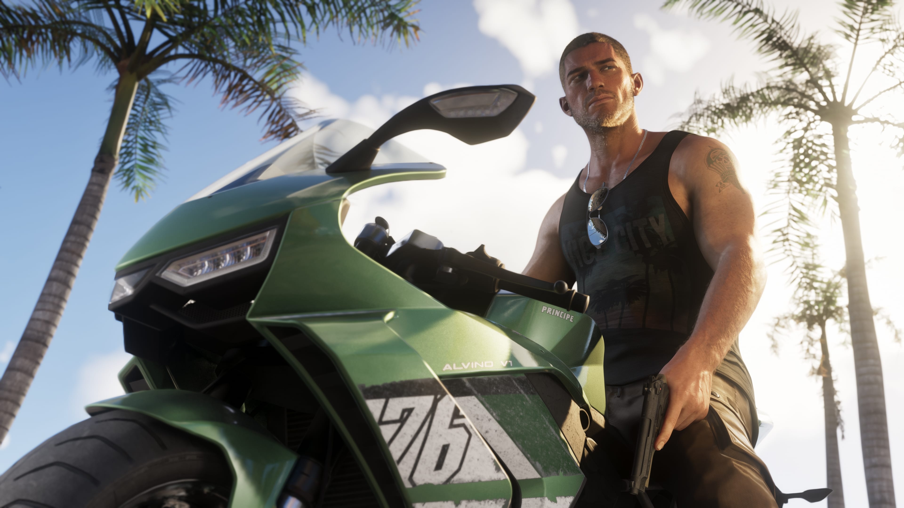

Em Vice City, oportunidades aparecem a cada esquina. Lucia e Jason estão prontos para oferecer serviços exclusivos e contratos especiais.
Conheça nossos serviços em Vice City.
Missões personalizadas e contratos exclusivos no universo de Vice City.

Transporte de personagens e cargas especiais dentro do jogo.
Recuperação de propriedades e objetos em missões fictícias.
Informações e análises para planejar missões e histórias.
Grandes missões cinematográficas e desafios exclusivos.
Encontros, alianças e acordos entre personagens.
Lucia e Jason são uma dupla determinada a conquistar seu espaço em Vice City. Juntos, oferecem serviços exclusivos e transformam cada contrato em uma nova oportunidade.
Entre em contato e solicite seu próximo contrato.